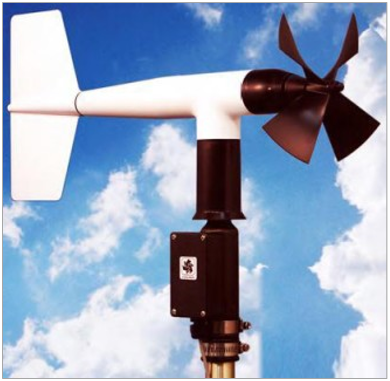
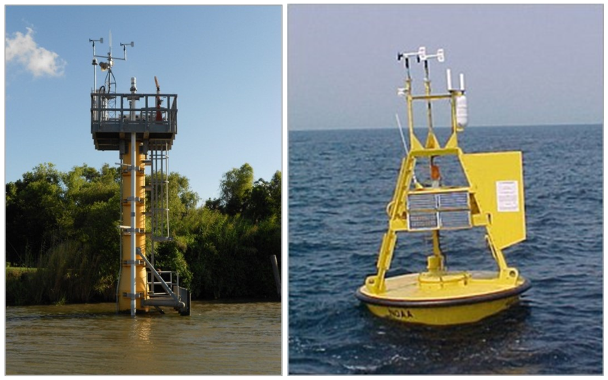
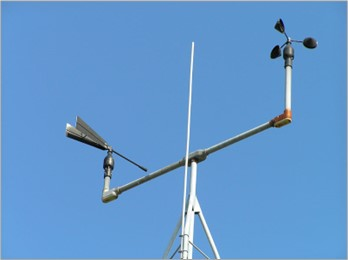
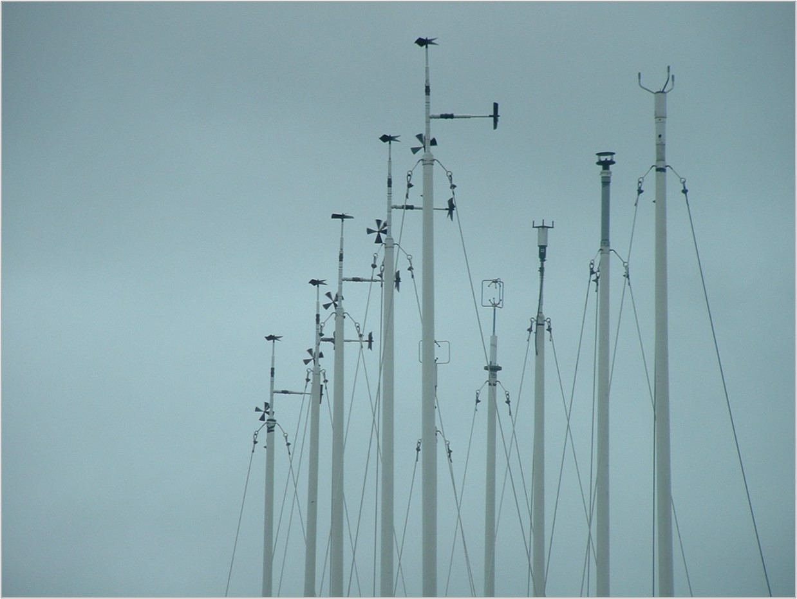

Manual for Real-Time Quality Control of Wind Data
A Guide to Quality Control and Quality Assurance for Coastal and Oceanic Wind Observations
https://doi.org/10.25607/OBP-1458
Acknowledgements
We are grateful to our entire Wind Manual Team, whose names are listed in appendix B. Special thanks go to those who served on the Wind Manual Committee and provided content and suggestions for the initial draft, as well as all who reviewed each draft and provided valuable feedback.
Acronyms and Abbreviations
| AOOS | Alaska Ocean Observing System |
| CariCOOS | Caribbean Coastal Ocean Observing System |
| CeNCOOS | Central and Northern California Ocean Observing System |
| C-MAN | Coastal-Marine Automated Network |
| CO-OPS | Center for Operational Oceanographic Products and Services |
| DCP | Data Collection Platform |
| EPA | Environmental Protection Agency |
| GCOOS | Gulf of Mexico Coastal Ocean Observing System |
| GLOS | Great Lakes Observing System |
| GOOS | Global Ocean Observing System |
| IOOS | Integrated Ocean Observing System |
| MARACOOS | Mid-Atlantic Regional Association Coastal Ocean Observing System |
| m/s | Meters per second |
| NANOOS | Northwest Association of Networked Ocean Observing Systems |
| NDBC | National Data Buoy Center |
| NERACOOS | Northeastern Regional Association of Coastal Ocean Observing Systems |
| NIST | National Institute of Standards and Technology |
| NOAA | National Oceanic and Atmospheric Administration |
| NOS | National Ocean Service |
| NWS | National Weather Service |
| PacIOOS | Pacific Islands Ocean Observing System |
| QARTOD | Quality-Assurance/Quality Control of Real-Time Oceanographic Data |
| QA | Quality Assurance |
| QC | Quality Control |
| SCCOOS | Southern California Coastal Ocean Observing System |
| SD | Standard Deviation |
| SECOORA | Southeast Coastal Ocean Observing Regional Association |
| UNESCO | United Nations Organization for Education, Science, and Culture |
| USGS | United States Geological Survey |
| WMO | World Meteorological Organization |
| WOTAN | Wind Observation Through Ambient Noise |
| WS | Wind Speed |
Definitions of Selected Terms
This manual contains several terms whose meanings are critical to those using the manual. These terms are included in the following table to ensure that the meanings are clearly defined.
| Anemometer | An anemometer is an instrument for measuring and indicating the force or speed and sometimes direction of the wind (Merriam-Webster). |
| Codable Instructions | Codable instructions are specific guidance that can be used by a software programmer to design, construct, and implement a test. These instructions also include examples with sample thresholds. |
| Data Record | A data record is one or more messages that form a coherent, logical, and complete observation. |
| Message | A message is a standalone data transmission. A data record can be composed of multiple messages. |
| Operator | Operators are individuals or entities who are responsible for collecting and providing data. |
| Quality Assurance (QA) | QA involves processes that are employed with hardware to support the generation of high quality data. (section 2.0 and appendix A). These steps or measures are often taken prior to deployment. |
| Quality Control (QC) | QC involves follow-on steps that support the delivery of high quality data and requires both automation and human intervention (section 3.0). These steps or measures are often taken after deployment. |
| Real Time | Real time means that: data are delivered without latency for immediate use; time series extends only backwards in time, where the next data point is not available; and there may be delays ranging from a few seconds to a few hours or even days, depending upon the data delivery capabilities (section 1.0). |
| Threshold | Thresholds are limits that are defined by the operator. |
1.0 Background and Introduction
The U.S. Integrated Ocean Observing System (IOOS) has a vested interest in collecting high quality data for the 26 core variables (U.S. IOOS 2010) measured on a national scale. In response to this interest, U.S. IOOS continues to establish written, authoritative procedures for the quality control (QC) of real-time data through the Quality Assurance/Quality Control of Real-Time Oceanographic Data (QARTOD) program, addressing each variable as funding permits. Additional efforts can also be undertaken to produce higher quality delayed mode data. This wind data manual is the sixth in a series of guidance documents that address QC of real-time data of each core variable.
Please refer to http://www.ioos.noaa.gov/qartod/for the following documents:
- U.S IOOS QARTOD Project Plan dated April 1, 2012.
- U.S. Integrated Ocean Observing System, 2012. Manual for Real-Time Quality Control of Dissolved Oxygen Observations: A Guide to Quality Control and Quality Assurance for Dissolved Oxygen Observations in Coastal Oceans. 45pp.
- U.S. Integrated Ocean Observing System, 2013. Manual for Real-Time Quality Control of In-Situ Current Observations: A Guide to Quality Control and Quality Assurance of Acoustic Doppler Current Profiler Observations. 43pp.
- U.S. Integrated Ocean Observing System, 2013. Manual for Real-Time Quality Control of In-Situ Surface Wave Data: A Guide to Quality Control and Quality Assurance of In-Situ Surface Wave Observations. 49pp.
- U.S. Integrated Ocean Observing System, 2013. Manual for Real-Time Quality Control of Temperature and Salinity Data: A Guide to Quality Control and Quality Assurance of Temperature and Salinity Observations. 55pp.
- U.S. Integrated Ocean Observing System, 2014. Manual for Real-Time Quality Control of Water Level Data: A Guide to Quality Control and Quality Assurance of Water Level Observations. 43pp.
Please reference this document as:
U.S. Integrated Ocean Observing System, 2014. Manual for Real-Time Quality Control of Wind Data: A Guide to Quality Control and Quality Assurance of Coastal and Oceanic Wind Observations. 45pp.
This manual is a living document that reflects the state-of-the-art QC testing procedures for real-time wind observations. It is written for the experienced operator but also provides examples for those who are just entering the field.
2.0 Purpose/Constraints/Applications
The following sections describe the purpose of this manual, as well as the constraints that operators may encounter when performing QC of wind data and specific applications of those data.
2.1 Purpose
The purpose of this manual is to provide guidance to the U.S. IOOS and the wind community at large for the real-time QC of wind speed, direction, and gust measurements using an agreed-upon, documented, and implemented standard process. This manual is also a deliverable to the U.S. IOOS Regional Associations and the ocean observing community and represents a contribution to a collection of core variable QC documents.
Wind observations covered by these test procedures are collected in coastal areas, oceans, and lakes in real time or near-real time. These tests draw from existing expertise in programs such as the World Meteorological Organization (WMO), the U.S. Environmental Protection Agency (EPA), and very specifically the National Oceanic and Atmospheric Administration National Weather Service National Data Buoy Center (NOAA/NWS/NDBC).
This manual differs from existing QC procedures for wind in that its focus is on real-time data. It presents a series of eleven tests that operators can incorporate into practices and procedures for QC of wind measurements. These tests apply only to the in-situ, real-time measurement of wind as observed by sensors deployed on fixed or mobile platforms and not to remotely sensed wind measurements (e.g., satellite observations).
Table 2-1 shows technologies that are included and excluded in this manual, and table 2-2 shows the platforms that are included and excluded.
| Technologies Included | Technologies Excluded |
|---|---|
| Sonic and acoustic resonance | Dropsondes |
| Cup and van | Radiosondes/balloons |
| Propeller and vane | Microwave mapping |
| Hot wire (no direction, rarely used) | |
| WOTAN |
: Table 2-1. Technologies included and excluded in this manual.
| Platforms Included | Platforms Excluded |
|---|---|
| Coastal and offshore | Satellite |
| Surface fixed and mobile platforms | Radar |
| Autonomous surface vessels and | Aircraft |
| ships | |
| Oil platforms | |
| C-MAN | |
| Buoys |
: Table 2-2. Platforms included and excluded in this manual.
These test procedures are written as a high-level narrative from which a computer programmer can develop code to execute specific tests and set data flags (data quality indicators) within an automated software program. U.S. IOOS/QARTOD maintains a code repository (http://code.google.com/p/qartod/) where operators may find or post examples of code in use. Although certain tests are recommended, thresholds can vary among data providers. In some instances, tests have been simplified and are less rigorous than those implemented by established providers of wind data, such as NOAA/NWS/NDBC. A balance must be struck between the timesensitive needs of real-time observing systems and the degree of rigor that has been applied to non-real-time systems by operators with decades of QC experience.
High-quality marine observations require sustained quality assurance (QA) and QC practices to ensure credibility and value to operators and data users. QA practices involve processes that are employed with hardware to support the generation of high-quality data, such as a sufficiently accurate, precise, and reliable sensor with adequate resolution. Other QA practices include: sensor calibration; calibration checks and/or in-situ verification, including post-deployment calibration; proper deployment considerations, such as measures for corrosion control; solid data communications; adequate maintenance intervals; and creation of a robust qualitycontrol process. Post-deployment calibration (instrument verification after recovery) issues are not part of the scope of this manual. Although QC and QA are interrelated and both are important to the process, QA is not the focus of this manual. However, QA considerations are briefly addressed in appendix A.
QC involves follow-on steps that support the delivery of high-quality data and requires both automation and human intervention. QC practices include such things as format, checksum, timely arrival of data, threshold checks (minimum/maximum rate of change), neighbor checks, climatology checks, model comparisons, signal/noise ratios, verification of user satisfaction, and generation of data flags (Bushnell 2005).
The process of ensuring data quality is not always straightforward. QA/QC procedures may be specific to a sensor technology or even to a particular manufacturer's model, so the establishment of a methodology that is applicable to every sensor is challenging.
2.2 Constraints
2.2.1 Data Processing Methodology
The type of sensor system used to collect wind data and the system used to process and transmit the wind measurements determine which QC algorithms are used. In-situ systems with sufficient on-board processing power within the sensor may process the original (raw) data and produce derived products, such as a generated analog output designed to mimic a competitor's output. Most sensors sample at high-rate or burst mode (e.g., 121 1-Hz values averaged to compute an observation every 6 minutes). These samples are used to produce the actual real-time values transmitted (e.g., hourly speed, direction, and gust values). Because operators have different data processing methodologies, three levels of QC are proposed: required, strongly recommended, and suggested.
2.2.2 Traceability to Accepted Standards
To ensure that wind sensors produce accurate data, rigorous calibrations and calibration checks must be performed in addition to QC checks. Most operators rely upon manufacturer calibrations and generally conduct calibration checks before deployment. These calibration checks are critical to ensuring that the manufacturer calibration is still valid. Manufacturers describe how to conduct these calibration checks in their user manuals, which are currently considered QA and further addressed in appendix A.
Calibrations and calibration checks must be traceable to accepted standards. The National Institute of Standards and Technology (NIST) (http://www.nist.gov/calibrations/air_speed_instruments.cfm), a provider of internationally accepted standards, is often the source for accepted standards. Calibration activities must be tailored to match data use and resources. Calibration cost and effort increase dramatically as accuracy requirements increase.
A stable calibration is essential for collecting climate quality data. Few operators maintain a wind tunnel and reference standards as described in Freitag et al. (2001) and Gilhousen (1986), but they may partner with such facilities to periodically conduct calibrations. Alternatively, they may develop a consensus reference capability using multiple anemometers to establish "truth", as described by Kline and Mikhail (1998).
2.2.3 Sensor Deployment Considerations and Hardware Limitations
Wind sensors can be deployed in several ways: on fixed platforms with no motion or rotation, on moorings where buoy motion provides a source of error and a compass is required to correct for rotation, or on mobile platforms where corrections for both translation and rotation must be conducted.
While outside the scope of the real-time tests described in this manual, QA is critical to data quality. Sensors require attention to proper QA measures both before and after the deployment. Operators must follow the manufacturer's recommendations for factory calibration schedules and proper sensor maintenance. Operators should strive to adhere to anemometer installation standards (EPA 1987; WMO 1983), allowing for proper site clearance in the surrounding vicinity of the anemometer and above ground, rooftop, or other mounting surface. Anemometer height relative to an accepted datum and photos of the installation should be available in the metadata.
Also important, but beyond the scope of this document at present, is the determination and reporting of data uncertainty. All sensors and measurements contain errors, and operators should routinely provide a quantitative measure of data uncertainty in the associated metadata. Such calculations can be challenging, so operators should also document the methods used to compute the uncertainty. The limits and thresholds implemented by operators for the data quality control tests described here are a key component in establishing the observational error bars. Operators are strongly encouraged to consider the impact of the QC tests on data uncertainty, as these two efforts greatly enhance the utility of their data.
The following sections describe the sensor technologies that are most often used, with a brief note about their attributes and shortcomings.
2.3 Applications of Wind Data
Real-time wind observations are important for a wide variety of applications, including:
- Meteorological and oceanographic forecasting of winds, waves, and currents
- Safe navigation and vessel transit
- Safe vessel docking and close-in maneuvering
- Commercial fishing
- Recreational boating
- Operation of coastal engineering infrastructure
Other applications, such as climatological summaries and operational/design criteria, do not require real-time QC but benefit from it through early detection of faulty wind observations or other station issues.
2.4 Sensor Technology
The most predominant anemometer is an impellor/wind vane combination (often combined into one unit) used to measure wind speed/direction, respectively. Figure 2-1 shows an RM Young blade impellor mounted on a rotating wind vane. The impellor rotation can be detected magnetically, electrically, or optically; the pulsed output is used to determine the impellor speed of rotation. The wind vane rotation is often measured with a potentiometer, such that orientation is proportional to the observed resistance. A data collection platform (DCP) is used to capture the sensor output and apply a calibration to convert the observations to wind speed and direction. These instantaneous observations are then processed over a period of time to create the reported wind speed, direction, and gust. However, this technology does have several disadvantages. Impellors and wind vanes bearings tend to wear or corrode over time, have various start-up thresholds that may preclude low-wind observations, and are subject to damage if the blade strikes an object.

Figure 2-2 (left) shows the dual vane/impellor anemometers mounted on a tower atop a single pile structure supporting a NOAA/National Ocean Service (NOS)/Center for Operational Oceanographic Products and Services (CO-OPS) water level gauge. Metadata for this station can be found at http://tidesandcurrents.noaa.gov/stationhome.html?id=8764227. Figure 2-2 (right) shows dual anemometers mounted on a standard NOAA/NDBC 3-meter (m) discus buoy. An example of supporting metadata for this buoy can be seen at http://www.ndbc.noaa.gov/station_page.php?station=44009. In both cases, maintenance is eased because the dual anemometers are identical. However, they will have identical failure modes, and operators may be lulled into a sense of heightened accuracy because of the certain agreement between the two identical sensors. A better arrangement would have dual anemometers with different technologies. Figure 2-3 shows a cup anemometer on the right side of the image with a separate vane on the left used to provide wind direction. The vane/impellor anemometer bearings are especially challenged in a marine environment, and maintenance may be needed more frequently. Manufacturers continually strive to improve the materials used, such as the recent implementation of ceramic bearings, which won't corrode.


Another popular technology uses ultrasound, either by observing changes in the time of flight of acoustic pulses between several emitter/receiver pairs, or more recently by detecting phase changes in a resonant acoustic wave. Figure 2-4 shows a variety of acoustic anemometers being tested at the Otis Weather Test facility in Cape Cod, Massachusetts. These electronic sensors usually include the circuitry needed to directly output calibrated wind speed, direction, and gust. In some cases, they can also generate an analog output that mimics an impellor/wind vane, easing the replacement of these devices with a sonic anemometer. They excel at observing the lowest wind speeds, but in some cases, the physical structure that supports the emitter/receivers also obstructs wind flow. The problem is most pronounced at extremely high wind speeds. Some sensors are also prone to failure because of roosting birds. Early acoustic anemometers accumulated water droplets on the emitter or receiver resulting in erroneous measurements, which are now readily detected and discarded by the sensor itself before outputting an observation.

Both impellor and sonic anemometers are subject to failure when water freezes on them, especially in lowwind and high-humidity conditions. Coatings (such as Teflon) and heaters are often employed to mitigate freezing. Heaters require a large power supply, and in extreme cold, may sufficiently melt snow that otherwise would not have adhered to the device.
Wind Observation Through Ambient Noise (WOTAN) is a unique technology that is not widely used. Acoustic transducers record sound pressure levels near the ocean surface at selected frequencies, and algorithms have been developed to convert these observations into wind speeds (Vagle et al. 1990). A vane on the supporting buoy provides wind direction. This technology is included because the output of a WOTAN wind buoy is simply wind speed and direction, which makes the QC tests described herein directly applicable.
Hot-wire wind speed sensors are thermistors that are cooled by heat dissipation when winds blow over them. They are not typically used in the field because they are fragile, can require a large power supply, and require correction for humidity. They are more often found as a reference sensor in wind tunnel calibration facilities.
3.0 Quality Control
As is the case with most real-time meteorological/ocean observations, the real-time QC of wind observations can be extremely challenging. Events such as fast moving fronts, microbursts, and tropical cyclones must be considered when determining acceptable data thresholds. Human involvement is therefore important to ensure that solid scientific principles are applied to data evaluation so that good data are not discarded and bad data are not distributed (e.g., selection of appropriate thresholds and examination of data flagged as questionable).
To conduct real-time QC on wind observations, the first pre-requisite is to understand the science and context within which the measurements are being conducted. For example and as was discussed in section 2.2.3, sensors can be deployed in a number of ways. Each deployment method imposes the need for specific QC methods. Real-time wind data should have these main attributes: accurate time, speed, direction, and gust measurements.
This manual focuses specifically on the QC of real-time data, but there are limitations. For example, gradual calibration changes or slow system response variations (sensor drift) cannot be detected or corrected in real time. Therefore, delayed-mode approaches are done through comparison with collocated observations (e.g., satellite data). Drift correction to wind measurements during post-processing is highly unlikely to occur even if a valid post-recovery calibration could be obtained. Drift is often caused by worn bearings and corrosion, potentiometer pad degradation, and to a lesser extent, the aging of electronic components—e.g., those compensating for temperature dependencies, which are now less of a problem thanks to advances in digital circuitry. These gradual changes affect different systems in different ways (e.g., an impellor has a higher starting speed caused by corroded bearings). Another limitation is the ability of some data providers to backfill data gaps. In both of these examples, the observations are not considered to be real time for purposes of QC checks. (However, in some sophisticated 24/7 QC operations, real-time dissemination may be switched from one sensor to another based on real-time QC flags.)
Observations are time ordered, and the most recent observation is n0, preceded by a value at n-1, and so on backwards in time. The focus of the real-time QC is primarily on observations n0, n-1, and n-2.
3.1 QC Flags
Data are evaluated using QC tests, and the results of those tests are recorded by inserting flags in the data files. Table 3-1 provides the set of flags and associated descriptions adopted by the International Oceanographic Data and Information Exchange in 2013 and subsequently by U.S. IOOS. Additional flags may be incorporated to provide more detailed information to assist with troubleshooting. For example, an observation may fail the wind speed neighbor test and be flagged as having failed. If the data failed the wind speed neighbor test because the observation is too low, a second-tier "failed low" flag may indicate that the value was lower than allowed by a preset threshold. Such detailed flags primarily support maintenance efforts and are presently beyond U.S. IOOS requirements for QC of real-time data. However, all flags should be identified and defined in the data's metadata.
Further post-processing of the data may yield different conclusions from those reached during initial assessments. Flags set in real time should not be changed, ensuring that historical documentation is preserved. Results from post processing should generate another set of flags corresponding to a revised version of the data.
| Flag | Description |
|---|---|
| Pass=1 | Data have passed critical real-time quality control tests and are deemed adequate for use as preliminary data. |
| Not Evaluated=2 | Data have not been QC-tested, or the information on quality is not available. |
| Suspect or Of High Interest=3 | Data are considered to be either suspect or of high interest to data providers and users. They are flagged suspect to draw further attention to them by operators. |
| Fail=4 | Data are considered to have failed one or more critical real-time QC checks. If they are disseminated at all, it should be readily apparent that they are not of acceptable quality. |
| Missing Data=9 | Data are missing; used as a placeholder. |
: Table 3-1. Flags for real-time data (UNESCO 2013).
3.2 Test Hierarchy
This section outlines eleven real-time QC tests that are required, recommended, or suggested for wind measurements. Operators should also consider that some of these tests can be carried out within the instrument, where thresholds can be defined in configuration files. Although more tests may imply a more robust QC effort, there are many reasons operators could use to justify not conducting some tests. In those cases, operators need only to document reasons these tests do not apply to their observations. Such flexibility is needed to support the U.S. IOOS effort, since the number of tests conducted and the justification for not applying some tests are useful for evaluating an operator's skill levels. Tests are listed in table 3-2 and are divided into three groups: those that are required, strongly recommended, or suggested. However, for some critical real-time applications with high risk operations, it may be advisable to invoke all groups.
| Group 1: Required | Test 1 | Timing/Gap Test |
| Test 2 | Syntax Test | |
| Test 3 | Location Test | |
| Test 4 | Gross Range Test | |
| Test 5 | Climatology Test | |
| Group 2: Strongly Recommended | Test 6 | Spike Test |
| Test 7 | Rate of Change Test | |
| Test 8 | Flat Line Test | |
| Group 3: Suggested | Test 9 | Multi-Variate Test |
| Test 10 | Attenuated Signal Test | |
| Test 11 | Neighbor or Forecast Test |
: Table 3-2. QC Tests in order of implementation and hierarchy.
3.3 QC Test Descriptions
A variety of tests can be performed on the sensor measurements to evaluate data quality. Testing the timely arrival and integrity of the data transmission itself is a first step. If the data are corrupted during transmission, further testing may be irrelevant. The checks defined in these eleven tests evaluate data through various comparisons to other data and to the expected conditions in the given environment. The tests listed in this section presume a time-ordered series of observations and denote the most recent observation as previously described.
Some effort will be needed to select the best thresholds, which are determined at the operator level and may require multiple iterations of trial and error before final selections are made. A successful QC effort is highly dependent upon selection of the proper thresholds, which should not be determined arbitrarily but can be based on historical knowledge or statistics derived from recently acquired data. Although this manual provides some guidance for selecting thresholds based on input from various operators, it is assumed that operators have the necessary expertise and interest in selecting the proper thresholds to maximize the value of their QC effort. Operators should openly provide thresholds as metadata for user support. The selection of wind thresholds may be dependent upon the real-time application, (e.g., onset of a coastal sea breeze or observation of a hurricane maximum gust). This shared information will help U.S. IOOS to document standardized thresholds that will be included in future releases of this manual.
3.3.1 Applications of QC Tests to Wind Sensors
These eleven tests require operators to select a variety of thresholds. Examples are provided in the following test tables; however, operators are in the best position to determine the appropriate thresholds for their operations. Wind speed (WS) is used in the descriptions and examples, but the tests apply equally to direction and gust in most cases. A discontinuity in wind direction is caused when the wind veers through north, stepping from 359° to 0° and complicating the application of some of these tests. Operators may choose to conduct wind direction tests on the u and v wind direction components to circumvent the problem. Some tests rely on multiple data points most recently received to determine the quality of the latest data point. When this series of data points reveals that the entire group fails, the most recent data point is flagged, but the previous flags are not changed. This action supports the view that historical flags are generally not altered. The first example is in Test 8, the Flat Line Test, where this scenario will become clearer. The exception to the rule occurs for Test 6 Spike Check, where the most recent point must be flagged as "2 Not Evaluated" until the next point arrives and the spike check can be performed. For additional information regarding flags, see the Manual for the Use of Real-Time Oceanographic Data Quality Control Flags (U.S. IOOS 2014) posted on the U.S. IOOS QARTOD website.
Test 1 - Timing/Gap Test (Required)
Check for arrival of data.
Test determines that the most recent data point has been measured and received within the expected time window (TIM_INC) and has the correct time stamp (TIM_STMP).
Note: For those systems that do not update at regular intervals (Argos telemetry, for example),
a large value for TIM_STMP can be assigned.
The gap check is not a solution for all timing errors.
Data could be measured or received earlier than expected.
This test does not address all clock drift/jump issues.
| Flags | Condition | Codable Instructions |
|---|---|---|
| Missing = 9 | Data have not arrived as expected. | If NOW - TIM_STMP > TIM_INC, flag = 9 |
| Suspect = 3 | N/A | N/A |
| Pass = 1 | Applies for test pass condition. | N/A |
Test Exception: None.
Test specifications to be established locally by the operator.
Example: TIM_INC = 1 hour
Test 2 - Syntax Test (Required)
Check to ensure that the message is structured properly.
Received data message (full message) contains the proper structure without any indicators of flawed transmission such as parity errors.
Possible tests are:
a) the expected number of characters (NCHAR) for fixed-length messages equals the number of characters received (REC_CHAR),
or
b) passes a standard parity bit check, cyclic redundancy check, etc. Many such syntax tests exist, and the user should select the best criteria for one or more syntax tests.
Capabilities for dealing with flawed messages vary among operators;
some may have the ability to parse messages to extract data within the flawed message sentence before the flaw.
A syntax check is performed only at the message level and not within the message content.
In cases where a data record requires multiple messages,
this check can be performed at the message level but is not used to check message content.
| Flags | Condition | Codable Instructions |
|---|---|---|
| Fail = 4 | Data sentence cannot be parsed to provide a valid observation. | If REC_CHAR \(\neq\) NCHAR, flag = 4 |
| Suspect = 3 | N/A | N/A |
| Pass = 1 | Expected data sentence received; absence of parity errors. | N/A |
Test Exception: None.
Test specifications to be established locally by the operator.
Example: NCHAR = 128
Test 3 - Location Test (Required)
Check for reasonable geographic location.
Test checks that the reported present physical location (latitude/longitude) is within operator-determined limits.
The location test(s) can vary from: 1) a simple invalid location, to 2) a more complex check for displacement (DISP) exceeding a distance limit RANGEMAX based upon a previous location and platform speed.
Operators may also check for 3) erroneous locations based upon other criteria,
such as reported positions over land,
as appropriate.
| Flags | Condition | Codable Instructions |
|---|---|---|
| Fail=4 | Invalid location | If LAT > abs(90) or LONG > abs(180), flag = 4 |
| Suspect=3 | Unlikely platform displacement | If DISP > RANGEMAX, flag = 3 |
| Pass=1 | Applies for test pass condition. | N/A |
Test Exception: Test does not apply to fixed deployments when no location is transmitted.
Test specifications to be established locally by the operator.
Example 1: Impossible location, LAT or LONG exceeds mathematical limits.
Example 2: Displacement DISP calculated between sequential position reports, RANGEMAX = 20 km.
Example 3: Buoy position resides within land mask.
Test 4 - Gross Range Test (Required)
Data point exceeds sensor or operator-selected min/max.
All sensors have a limited output range, and this can form the most rudimentary gross range check.
No values less than a minimum value or greater than the maximum value the sensor can output (SENSOR_MIN, SENSOR_MAX) are acceptable.
Additionally,
the operator can select a smaller span (USER_MIN, USER_MAX) based upon local knowledge or a desire to draw attention to extreme values.
An obvious gross range check is wind direction 0-360°.
NOTE: Operators may choose to flag as suspect values that exceed the calibration span but not the hardware limits (e.g., a value that sensor is not capable of producing).
| Flags | Condition | Codable Instructions |
|---|---|---|
| Fail=4 | Reported value is outside of sensor span. | If \(WS_n\) < SENSOR_MIN, or \(WS_n\) > SENSOR_MAX, flag = 4 |
| Suspect=3 | Reported value is outside of user selected span. | If \(WS_n\) < USER_MIN, or \(WS_n\) > USER_MAX, flag = 3 |
| Pass=1 | Applies for test pass condition | N/A |
Test Exception: None.
Test specifications to be established locally by the operator.
Examples:
SENSOR_MAX = 100 m/s(limited by the manufacturer firmware, for example)SENSOR_MIN = 0 m/sUSER_MAX = 75 m/s USER_MIN = - 0 m/s
Test 5 - Climatology Test (Required)
Test that data point falls within seasonal expectations.
This test is a variation on the gross range check, where the gross range Season_MAX and Season_MIN are adjusted monthly,
seasonally,
or at some other operator-selected time period (TIM_TST).
Expertise of the local operator using long historical records is the best method to determine reasonable seasonal averages longer time series permit more refined identification of appropriate thresholds.
Additional climatology guidance is available at http://www.ncdc.noaa.gov/societal-impacts/wind/mean/2014/4, http://numbat.coas.oregonstate.edu/cogow,
http://iridl.ldeo.columbia.edu/maproom/Global/Climatologies/Vector_Winds.html,
and from the NCEP/NCAR Reanalysis 1, 2 and 3 (now CFSR).
| Flags | Condition | Codable Instructions |
|---|---|---|
| Fail=4 | Because of the potential for extreme wind speeds, gusts, and directional variability without regard to season, no fail flag is identified for this test. | N/A |
| Suspect=3 | Reported value is outside the operator-identified climatology window. | If \(WS_n\) < Season_MIN or \(WS_n\) > Season_MAX, flag = 3 |
| Pass=1 | Applies for test pass condition. | N/A |
Test Exception: None.
Test specifications to be established locally by operator:
A seasonal matrix of WSmax and WSmin values at all TIM_TST intervals.
Examples: SPRING_MIN = 0 m/s, SPRING_MAX = 60 m/s
Test 6 - Spike Test (Strongly Recommended)
Data point \(n-1\) exceeds a selected threshold relative to adjacent data points.
This check is for single-value spikes, specifically the value at point n-1.
Spikes consisting of more than one data point are difficult to capture,
but their onset may be flagged by the rate of change test.
The spike test consists of two operator-selected thresholds, THRSHLD_LOW and THRSHLD_HIGH.
Adjacent data points (\(n_{-2}\) and \(n_0\)) are averaged to form a spike reference (SPK_REF).
The absolute value of the spike is tested to capture positive and negative spikes. Large spikes are easier to identify as outliers and flag as failures.
Smaller spikes may be real and are only flagged suspect.
The thresholds may be fixed values or dynamically established (for example,
a multiple of the standard deviation over an operator-selected period).
An alternative is a third difference test defined as \(Diff_n = WS_{n-3} - 3 * WS_{n-2} + 3 * WS_{n-1} - WS_n\).
| Flags | Condition | Codable Instructions |
|---|---|---|
| Fail=4 | High spike threshold exceeded. | If abs(\(WS_{n-1}\) - SPK_REF) > THRSHLD_HIGH, flag = 4 |
| Suspect=3 | Low spike threshold exceeded. | If abs(\(WS_{n-1}\) - SPK_REF) > THRSHLD_LOW and abs(\(WS_{n-1}\) - SPK_REF) ≤ THRSHLD_HIGH, flag = 3 |
| Pass=1 | Applies for test pass condition. | N/A |
Test Exception: None.
Test specifications to be established locally by the operator.
Examples: THRSHLD_LOW = 20 m/s, THRSHLD_HIGH = 40 m/s
Note: For one-minute sampling, a threshold proportional to the 97th or 98th percentile of first differences is effective given enough recent data to robustly calculate this threshold. This flexible standard is particularly useful for ships, which can traverse a wide range of conditions and sensors in areas with large synoptic or seasonal scale variability.
Test 7 - Rate of Change Test (Strongly Recommended)
Excessive rise/fall test.
This test inspects the time series for a time rate of change that exceeds a threshold value identified by the operator. Wind speed, direction, and gust values can change substantially over short periods in all locations, hindering the value of this test. A balance must be found between a threshold set too low, which triggers too many false alarms, and one set too high, making the test ineffective. Test implementation can be challenging. Upon failure, it is unknown which point is bad. Further, upon failing a data point, it remains to be determined how the next iteration can be handled. The following suggests one approach to implementation of a threshold:
The rate of change between \(WS_{n-1}\) and \(WS_n\) must be less than three standard deviations (3*SD) of first differences.
The local operator can determine both the number of SDs (N_DEV) and the period over which the SD is calculated (TIM_DEV).
| Flags | Condition | Codable Instructions |
|---|---|---|
| Fail=4 | No fail flag is identified for this test. | N/A |
| Suspect=3 | The rate of change exceeds the selected threshold. | If abs(\(WS_n – WS_{n-1}\)) > N_DEV * SD, flag = 3 |
| Pass=1 | Applies for test pass condition. | N/A |
Test Exception: None.
Test specifications to be established locally by operator.
Examples: N_DEV = 3, TIM_DEV = 8 hours.
Test 8 - Flat Line Test (Strongly Recommended)
Invariant value.
When some sensors and/or data DCPs fail,
the result can be a continuously repeated observation of the same value.
This test compares the present observation (\(n\)) to a number (REP_CNT_FAIL or REP_CNT_SUSPECT) of previous observations.
Observation \(n\) is flagged if it has the same value as previous observations within a tolerance value,
EPS,
to allow for numerical round-off error.
Note that historical flags are not changed.
| Flags | Condition | Codable Instructions |
|---|---|---|
| Fail=4 | When the five most recent observations are equal, \(WS_n\) is flagged fail. | Flag=4 For i=1, REP_CNT_FAIL If \(WS_n - WS_{n-i}\) > EPS then flag = 1 end if |
| Suspect=3 | It is possible but unlikely that the present observation and the two previous observations would be equal. When the three most recent observations are equal, \(WS_n\) is flagged suspect. | If flag=4, end Flag=3 For i=1, REP_CNT_SUSPECT If abs(\(WS_n\) - \(WS_{n-i}\)) > EPS then flag = 1 end if |
| Pass=1 | Applies for test pass condition. | N/A |
Test Exception: None.
Test specifications to be established locally by the operator.
Examples: REP_CNT_FAIL = 5, REP_CNT_SUSPECT= 3, EPS = 0.5 m/s, in some instances, EPS=0 might apply.
Test 9 - Multi-Variate Test (Suggested)
Comparison to other variables.
This is an advanced family of tests,
starting with the simpler test described here and anticipating growth towards full co-variance testing in the future.
It is doubtful that anyone is conducting tests such as these in real time.
As these tests are developed and implemented,
they should be documented and standardized in later versions of this manual.
This example pairs rate of change tests as described in Test 7.
The WS rate of change test is conducted with a more restrictive threshold (N_WSMV_DEV).
If this test fails,
a second rate of change test operating on a second variable (barometric pressure [BP], for example) is conducted.
The absolute value rate of change should be tested,
since the relationship between WS and the second variable may be indeterminate.
If the rate of change test on the second variable fails to exceed a threshold (e.g., an anomalous step is found in WS and is lacking in barometric pressure),
then the \(WS_n\) value is flagged.
| Flags | Condition | Codable Instructions |
|---|---|---|
| Fail=4 | No fail flag is identified for this test. | N/A |
| Suspect=3 | \(WS_n\) fails the rate of change and the second variable (barometric pressure, for example) does not exceed the rate of change. | If abs(\(WS_n\) – \(WS_{n-1}\)) > N_WSMV_DEV * SD_WS AND abs(\(BP_n – BP_{n-1}\)) < N_BP_DEV * SD_BP, flag = 3 |
| Pass=1 | N/A |
Test Exception: None.
Test specifications to be established locally by the operator.
Examples: N_WSMV_DEV = 2, N_BP_DEV=2, TIM_DEV = 8 hours
NOTE: In a more complex case, more than one secondary rate of change test can be conducted. Wind direction or air temperature could be possible secondary candidates to be checked for anomalous rate of change values. In this case, a knowledgeable operator may elect to assign a pass flag to a high rate of change observation when any one of the secondary variables also exhibits a high rate of change. Such tests border on modeling, should be carefully considered, and may be beyond the scope of this effort.
The QARTOD wind committee recognized the high value in full co-variance testing but also noted the challenges. Such testing remains to be a research project not yet ready for operational implementation.
Test 10 - Attenuated Signal Test (Suggested)
A test for inadequate variation of the time series.
A common sensor failure mode can provide a data series that is nearly but not exactly a flat line.
Badly worn bearings, a failed grounding wire, signal crosstalk, or inadequate wire shielding might cause such a failure.
This test inspects for an SD value or a range variation (MAX-MIN) value that fails to exceed threshold values (MIN_VAR_WARN, MIN_VAR_FAIL) over a selected time period (TST_TIM).
| Flags | Condition | Codable Instructions |
|---|---|---|
| Fail=4 | Variation fails to meet the minimum threshold MIN_VAR_FAIL. |
If During TST_TIM, SD < MIN_VAR_FAIL, or During TST_TIM, MAX-MIN < MIN_VAR_FAIL, flag = 4 |
| Suspect=3 | Variation fails to meet the minimum threshold MIN_VAR_WARN. | If During TST_TIM, SD < MIN_VAR_WARN, or During TST_TIM, MAX-MIN < MIN_VAR_WARN, flag = 3 |
| Pass=1 | Applies for test pass condition. | N/A |
Test Exception: None.
Test specifications to be established locally by the operator.
Examples: TST_TIM = 12 hours
MIN_VAR_WARN= ?, MIN_VAR_FAIL= ?
Note: This type of failure mode is rare for most anemometers, occurring at very low speeds for cup anemometers. A related problem occurs with sonic anemometers when droplets of water bead on the transmitter and receiver. The speed of sound is faster in water, complicating the interpretation of the observations. The consequences of this problem are not easily identified in wind speeds but can be a serious problem if the instrument is used to measure a momentum flux.
Test 11 - Neighbor Test (Suggested)
Comparison to nearby sensors.
This check has the potential to be the most useful test when a nearby second sensor is determined to have a similar response.
Ideally, redundant sensors utilizing different technology would be co-located and alternately serviced at different intervals. This close neighbor would provide the ultimate QC check, but cost prohibits such a deployment in most cases.
However, there are few instances where a second sensor is sufficiently proximate to provide a useful QC check. Wind observations are more readily compared to adjacent sites than many non-conservative observations (such as dissolved oxygen, for example), and this test should not be overlooked where it may have application.
This test is the same as Test 9), Multi-Variate Check – comparison to other variables where the second variable is the second sensor. The selected thresholds depend entirely upon the relationship between the two sensors as determined by the local knowledge of the operator.
In the instructions and examples below, data from one site (WS1) are compared to a second site (WS2). The standard deviation for each site (SD1, SD2) is calculated over the period (TIM_DEV) and multiplied as appropriate (N_WS1_DEV for site WS1) to calculate the rate of change threshold. Note that an operator could also choose to use the same threshold for each site, since the sites are presumed to be similar. A unique and highly valuable version of the neighbor check is the surrogate use of wind forecasts. These 'virtual neighbor' constructs offer a QC check that is also presumed to be similar—again, within userselected thresholds.
| Flags | Condition | Codable Instructions |
|---|---|---|
| Fail=4 | No fail flag is identified for this test. | N/A |
| Suspect=3 | \(WS1_n\) fails the rate of change and the second sensor WS2n does not exceed the rate of change. | If abs(\(WS1_n – WS1_{n-1}\)) > N_WS1_DEV * SD1 AND abs(\(WS2_n – WS2_{n-1}\)) < N_WS2_DEV * SD2, flag = 3 |
| Pass=1 | N/A |
Test Exception: There is no adequate neighbor.
Test specifications to be established locally by the operator.
Examples: N_WS1_DEV = 2, N_WS2_DEV=2, TIM_DEV = 8 hours
4.0 Summary
The QC tests in this wind manual have been compiled using the guidance provided by all QARTOD workshops (QARTOD 2003-2009). Test suggestions came from operators with extensive experience (see appendix B). Wherever possible, redundant tests have been merged. In some instances, tests have been simplified and are less rigorous than those offered by established providers of wind data. A balance must be struck between the time-sensitive needs of real-time observing systems and the degree of rigor that has been applied to non-real-time systems by operators with decades of QC experience.
The eleven data QC tests identified in this manual apply to wind observations from a variety of sensor types and platforms that may be used in U.S. IOOS applications. Since several existing programs, such as those of NDBC and WMO, have already developed QC tests that are similar to the U.S. IOOS QARTOD tests in this manual, the QARTOD wind speed committee's objective is for U.S. IOOS QARTOD requirements and recommendations to be in accord with the QC tests of existing programs. The individual tests are described and include codable instructions, output conditions, example thresholds, and exceptions (if any).
Selection of the proper thresholds is critical to a successful QC effort. Thresholds can be based on historical knowledge or statistics derived from more recently acquired data and should not be determined arbitrarily. This manual provides some guidance for selecting thresholds based on input from various operators, but also notes that operators need the subject matter expertise in selecting the proper thresholds to maximize the value of their QC effort.
Future QARTOD manuals will address standard QC test procedures and best practices for all types of common as well as uncommon platforms and sensors for all the U.S. IOOS core variables. Some test procedures may even take place within the sensor package. Significant components of metadata will reside in the sensor and be transmitted either on demand or automatically along with the data stream. Users may also reference metadata through Uniform Resource Locators to simplify the identification of which QC steps have been applied to data. However, QARTOD QC test procedures in this manual address only real-time in-situ observations made by sensors on fixed or mobile platforms. The tests do not include post-processing efforts or delayed-mode delivery, which is required for climate studies.
Each QC manual is envisioned as a dynamic document and will be posted on the QARTOD website at https://ioos.noaa.gov/project/qartod. This process allows for QC manual updates as technology development occurs for both upgrades of existing sensors and new sensors.
5.0 References
Bushnell, M., Presentation at QARTOD III: November 2005. Scripps Institution of Oceanography, La Jolla, California.
EPA, 1987. On-Site Meteorological Program Guidance for Regulatory Modeling Applications, EPA-450/4- 87-013. Office of Air Quality Planning and Standards, Research Triangle Parks, North Carolina 27711.
Freitag, H., M. O'Haleck, G. Thomas, and M. McPhaden, June 2001. Calibration Procedures and Instrumental Accessories for ATLAS Wind Measurements. NOAA Technical Memorandum OAR PMEL-119. Seattle, Washington. 24 pp. http://tao.noaa.gov/proj_overview/pubs/PDF/frei2339.pdf
Gilhousen, D., 1986. An Accuracy Statement for Meteorological Measurements Obtained from NDBC Buoys. National Data Buoy Center, Stennis Space Center, Mississippi. 7 pp. ftp://ftp.nodc.noaa.gov/nodc/archive/arc0056/0070493/1.1/data/0-data/Gilhousen_1986_MDS.pdf
Kline, J. and A. Mikhail, 1998. "Field Comparison of Maximum Cup, Climatronics and Met One Anemometers." RAM Associates, Oakley, California and Enron Wind Corporation, Tehachapi, California. 12 pp. http://ramwind.com/publications/Field_Calibration_of_Maximum_Cup_Climatronics_ and_Met_One_Anemometers.pdf
Paris. Intergovernmental Oceanographic Commission of UNESCO, 2013. Ocean Data Standards, Vol.3: Recommendation for a Quality Flag Scheme for the Exchange of Oceanographic and Marine Meteorological Data. (IOC Manuals and Guides, 54, Vol. 3.) 12 pp. (English) (IOC/2013/MG/54-3) http://www.nodc.noaa.gov/oceanacidification/support/MG54_3.pdf
QARTOD I-V Reports 2003-2009: http://www.ioos.noaa.gov/qartod/
U.S. IOOS Office, November 2010. A Blueprint for Full Capability, Version 1.0, 254 pp. www.ioos.noaa.gov/library/us_ioos_blueprint_ver1.pdf
U.S. Integrated Ocean Observing System, January 2014. Manual for the Use of Real-Time Oceanographic Data Quality Control Flags. 19 pp. http://www.ioos.noaa.gov/qartod/temperature_salinity/qartod_oceanographic_data_quality_manual.pdf
Vagel, S., W. Large, and D. Farmer, 1990: An Evaluation of the WOTAN Technique of Inferring Oceanic Winds from Underwater Ambient Sound. Journal of Atmospheric and Oceanic Technology, Vol. 7, p. 576-595. http://journals.ametsoc.org/doi/abs/10.1175/1520- 0426(1990)007%3C0576%3AAEOTWT%3E2.0.CO%3B2
WMO 1983. Guide to Meteorological Instruments and Methods of Observation. World Meteorological Organization No. 8, 5th edition, Geneva Switzerland.
Additional References to Related Documents:
Alliance for Coastal Technologies (ACT) 2012. Accessed September 20, 2012 at http://www.actus.info/evaluations.php
National Oceanographic Partnership Program (NOPP) January 2006. The First U.S. Integrated Ocean Observing System (IOOS) Development Plan – A report of the national Ocean Research Leadership Council and the Interagency Committee on Ocean Science and Resource Management Integration. The National Office for Integrated and Sustained Ocean Observations. Ocean US Publication No. 9.
National Data Buoy Center (NDBC) Technical Document 09-02, Handbook of Automated Data Quality Control Checks and Procedures, August 2009. National Data Buoy Center, Stennis Space Center, Mississippi 39529-6000.
NOAA, 2005. Second Workshop Report on the QA of Real-Time Ocean Data, July 2005. 48 pp. Norfolk, Virginia. CCPO Technical Report Series No. 05-01
NOAA, 2009. Fifth Workshop on the QA/QC of Real-Time Oceanographic Data. November 16-19, 2009. 136 pp. Omni Hotel, Atlanta, Georgia.
Ocean.US, 2006. National Office for Integrated and Sustained Ocean Observations. The First U.S. Integrated Ocean Observing System (IOOS) Development Plan, Publication 9, January 2006.
U.S. IOOS QARTOD Project Plan, February 18, 2012. http://www.ioos.noaa.gov/qartod/meetings.html
Supporting Documents Found on the QARTOD Website:
-
Report from the COL-NASA Data QA/QC Workshop: http://www.ioos.noaa.gov/qartod/dissolved_oxygen/data_qc_workshop_final_report20120_08_7.pdf
-
U.S. IOOS Development Plan: http://www.ioos.noaa.gov/qartod/dissolved_oxygen/ioos_devplan.pdf
-
National Data Buoy Center Handbook of Automated Data Quality Control: http://www.ioos.noaa.gov/qartod/dissolved_oxygen/ndbc_handbook_autodataqc2009.pdf
-
Data Quality Control in the U.S. IOOS: http://www.ioos.noaa.gov/qartod/dissolved_oxygen/ioos_cwp_lankhorst_data_qc.pdf
-
Requirements for Global Implementation of the Strategic Plan for Coastal Global Ocean Observing System (GOOS) - Panel for Integrated Coastal Observation (PICO-I): http://www.ioos.noaa.gov/qartod/dissolved_oxygen/requirements4global_implementation_4coastalgoos.pdf
-
Integrating Standards in Data QA/QC into OpenGeospatial Consortium Sensor Observation Services: http://www.ioos.noaa.gov/qartod/dissolved_oxygen/ieee_oceans09b_remen.pdf
Supporting Web Links
-
ACT Workshop: Meteorological Buoy Sensor Systems: http://www.act-us.info/Download/Workshops/2006/CBL_Meteorological/
-
EPA Quality Assurance Handbook for Air Pollution Measurement Systems: http://www.epa.gov/ttnamti1/files/ambient/met/Volume%20IV_Meteorological_Measurements.pdf
-
Establishing more truth in true winds, Smith, Bourassa, and Sharp, COAPS** http://coaps.fsu.edu/woce/truewind/paper
-
Federation of Earth Science Information Partners: http://www.esipfed.org
-
Guide to Meteorological Instruments and Methods of Observation WMO-No. 8: https://www.wmo.int/pages/prog/gcos/documents/gruanmanuals/CIMO/CIMO_Guide-7th_Edition-2008.pdf
-
Handbook of Quality Control Procedures and Methods for Surface Meteorological Data: http://coaps.fsu.edu/woce/docs/qchbook/qchbook.htm
-
Improved Real-Time Quality Control of NDBC Measurements, David B. Gihousen: http://www.ndbc.noaa.gov/realtime.pdf
-
NDBC Technical Document 09-02 Handbook of Automated Data Quality Control Checks and Procedures: http://www.ndbc.noaa.gov/NDBCHandbookofAutomatedDataQualityControl2009.pdf
-
NOAA/NOS/CO-OPS Guidelines for Meteorological Sensor Siting and Meteorological Sensor Measurements: http://88.167.97.19/albums/files/TMTisFree/Documents/Climate/Guidelines_for_Meteorological_Station Reconnaissance_and_Meteorological_Sensor_Height_Measurements_Updated_April2008.pdf
-
NWS Directives System: http://www.weather.gov/directives/010/010.htm
-
OFCM: Federal Meteorological Handbook No. 1 (FHM-1) Surface Weather Observations and Reports, 2005: http://www.ofcm.gov/fmh-1/fmh1.htm
-
Operations and Services Inter-comparison of Hydrometeorological Instruments and Algorithms, NDSPD 10-21 General Instructions for Terrestrial-Based In-Situ Instrument and Algorithm Intercomparisons for the Purpose of Climate Data Continuity: http://www.nws.noaa.gov/directives/sym/pd01021001curr.pdf
-
Wind Tunnel Tests of Some Low-Cost Sonic Anemometers: https://www.wmo.int/pages/prog/www/IMOP/publications/IOM-82- TECO_2005/Posters/P3(36)_USA_8_Sturgeon.pdf
Appendix A. Quality Assurance
A major pre-requisite for establishing quality control standards for wind measurements is a strong quality assurance program. Remember the mantra that good QC requires good QA, and good QA requires good scientists, engineers, and technicians.
A good QA effort continually seeks to ensure that end data products are of high value and strives to prove they are free of error. Operators should seek out partnering opportunities to inter-compare systems by colocation of differing sensors, thereby demonstrating high quality by both to the extent that there is agreement and providing a robust measure of observation accuracy by the level of disagreement. Operators should also, if possible, retain an alternate sensor or technology from a second vendor for similar in-house checks.
The lists in the following sections suggest ways to ensure QA by using specific procedures and techniques. Operators should also follow instructions provided by the sensor manufacturer.
A.1 Sensor Calibration Considerations
Observations must be traceable to one or more accepted standards through a calibration performed by the manufacturer and/or the operator. If the calibration is conducted by the manufacturer, the operator must also conduct some form of an acceptable calibration check.
NIST provides a wealth of information on standards and calibrations for many variables, including wind observations (http://www.nist.gov/calibrations/upload/sp250_79-2.pdf). Virtually all manufacturers provide calibrations traceable to NIST standards as part of their standard product services.
An often overlooked calibration or calibration check can be performed by choosing a consensus standard. For example, deriving the same answer (within acceptable levels of data precision or data uncertainty) from four different sensors of four different vendors, preferably utilizing several different technologies, constitutes an acceptable check. Because of the trend towards corporate conglomeration, those wishing to employ a consensus standard should ensure that the different vendors are truly independent.
A.2 Sensor Comparison
An effective QA effort continually strives to ensure that end data products are of high value and to prove they are free of error. Operators should seek out partnering opportunities to inter-compare systems by colocating differing sensors. Agreement of multiple systems would provide a robust observation, while disagreement may offer a measure of data uncertainty. If possible, operators should retain an alternate sensor or technology from a second vendor for similar in-house checks. For resource-constrained operators, however, it may not be possible to spend the time and funds needed to procure and maintain two systems. For those who do so and get two different results, the use of alternate sensors or technologies provide several important messages: a) a measure of corporate capabilities; b) a reason to investigate, understand the different results, and take corrective action; and c) increased understanding that when variables are measured with different technologies, different answers can be correct, and they must be understood in order to properly report results. For those who succeed, the additional sensors provide a highly robust demonstration of capability. Such efforts form the basis of a strong QA/QC effort. Further, it provides the operator with an expanded supply source, permitting less reliance upon a single vendor and providing competition that is often required by procurement offices. Although not real time, an alternative approach to monitoring stability of a sensor is comparison with remotely sensed data from satellite or radar (ideally two additional sources of observations so it is clear which instrument is drifting).
A.3 Common QA Considerations
In addition to the more generic QA processes listed below, these critical QA considerations specific to wind observations were highlighted by the manual committee and others who reviewed the manual:
- Carefully address the initial sensor alignment, correcting for magnetic deviation and variation as appropriate, and provide this information in the metadata. For vessel-mounted anemometers, do the same for the vessel heading.
- Fully describe the signal processing used to compute the observations in the metadata sampling frequency, averaging period, outlier removal, etc.
- Fully document the anemometer height relative to a valid, useful, standard datum such as NAVD88. Provide photographs of the surrounding vicinity. If the observations are site-specific and not representative of the greater area (for example, a ferry dock with a nearby terminal building), note that in the metadata.
The following lists suggest ways to ensure QA by using specific procedures and techniques:
- Perform pre-deployment calibrations on every sensor.
- Perform post-deployment calibrations on every sensor, plus in-situ comparison before recovery.
- Perform periodic calibration of ready-to-use spares.
- Monitor with redundant sensors whenever possible.
- Record all actions related to sensors calibration, cleaning, deployment, etc.
- Monitor battery voltage and watch for unexpected fluctuations.
When evaluating which instrument to use, consider these factors:
- Selection of a reliable and supportive manufacturer and appropriate model
- Operating range (i.e., instrument operation can be limited by temperature or sensor span)
- Resolution/precision required
- Sampling frequency how fast sensor can take measurements
- Reporting frequency how often the sensor reports the data
- Response time of the sensor sensor lag time response
- Power check master clock, battery, etc. variability in these among sensors
- Standardize sensor clock to a reference such as Global Positioning System or GPS timing
- Capability to reveal a problem with data
When evaluating which specifications must be met:
- State the expected accuracy.
- Ensure sensor calibration stability.
- Determine how the sensor compares to the design specifications.
- Determine if the sensor meets those specifications.
- Include photos showing surrounding area to identify any nearby obstructions
- Determine whether result is good enough (fit for purpose: data are adequate for nominal use as preliminary data).
General comments regarding QA procedures:
- A diagram (http://www.ldeo.columbia.edu/~dale/dataflow/), contributed by Dale Chayes (LDEO) provides a visual representation of proper QA procedures.
- Require serial numbers and model ID from the supplier.
- Do not make the checklist so detailed that it will not be used.
- Do not assume the calibration is perfect (could be a calibration problem rather than a sensor problem).
- Keep good records of all related sensor calibrations and checks (e.g., temperature).
- Use NIST-traceable instrumentation when conducting calibrations or calibration checks.
- A sensor that maintains an internal file of past calibration constants is very useful since it can be downloaded instead of transcribed manually introducing human error.
The calibration constants or deviations from a standard should be plotted over time to determine if the sensor has a drift in one direction or another. A sudden change can indicate a problem with the sensor or the last calibration.
A.4 QA Levels for Best Practices
A wide variety of techniques are used by operators to assure that sensors are properly calibrated and operating within specifications. While all operators must conduct some form of validation, there is no need to force operators to adhere to one single method. A balance exists between available resources, level of proficiency of the operator, and target data reproducibility requirements. The various techniques span a range of validation levels and form a natural hierarchy that can be used to establish levels of certification for operators (table A-1). The lists in the following sections suggest ways to ensure QA by using specific procedures and techniques.
| QA Best Practices Indicator | Description |
|---|---|
| Good Process | Sensors are swapped and/or serviced at sufficient regular intervals. Sensors are pre- and post-deployment calibration checked. |
| Better Process | Good process, plus an overlapping operational period during sensor swap-out to demonstrate continuity of observations. |
| Best Process | Better process, and follow a well-documented protocol or alternative sensors to validate in-situ deployments. Or, the better process employing manufacturer conducted pre- and post-calibrations. |
: Table A-1. Best practices indicator for QA
A.5 Additional Sources of QA Information
Wind sensor operators also have access to other sources of QA practices and information about a variety of instruments. For example, the Alliance for Coastal Technologies (ACT) serves as an unbiased, third party test bed for evaluating sensors and platforms for use in coastal and ocean environments. ACT conducts instrument performance demonstrations and verifications so that effective existing technologies can be recognized and promising new technologies can become available to support coastal science, resource management, and ocean observing systems (ACT 2012). The NOAA Ocean Systems Test and Evaluation Program (OSTEP) also conducts independent tests and evaluations on emerging technology as well as new sensor models. Both ACT and OSTEP publish findings that can provide information about QA, calibration, and other aspects of sensor functionality. The following list provides links to additional resources on QA practices.
- Manufacturer specifications and supporting Web pages/documents
- QARTOD –http://www.ioos.noaa.gov/qartod/
- ACT http://www.act-us.info/
- CO-OPS http://tidesandcurrents.noaa.gov/pub.html under the heading Manuals and Standards
- NDBC http://www.ndbc.noaa.gov/
The following samples provide hints for development of deployment checklists taken from QARTOD IV:
Pre-deployment QA Checklist
- Read the manual.
- Establish, use, and submit (with a reference and version #) a documented sensor preparation procedure (protocol). Maintain the sensor according to the manufacturer's procedures.
- Calibrate sensor against an accepted standard and document (with a reference and version #).
- Compare the sensor with an identical, calibrated sensor measuring the same thing in the same area (in a calibration lab).
- View calibration specifications with a critical eye (don't presume the calibration is infallible). Execute detailed review of calibrated data.
- Check the sensor history for past calibrations, including a plot over time of deviations from the standard for each (this will help identify trends such a progressively poorer performance). Control chart calibrations.
- Check the sensor history for past repairs, maintenance, and calibration.
- Consider storing and shipping information before deploying.
- Heat, cold, vibration, etc.
- Provide detailed documentation.
- Record operator/user experiences with this sensor after reading the manual.
- Search the literature for information on your particular sensor(s) to see what experiences other researchers may have had with the sensor(s).
- Establish and use a formal pre-deployment checklist.
- Ensure that technicians are well-trained. Use a tracking system for training to identify those technicians who are highly trained and then pair them with inexperienced technicians. Have a data quality review chain.
Deployment Checklist
- Verify sensor serial numbers.
- Deploy and co-locate multiple sensors (attention to interference if too close).
- Perform visual inspection; take photos if possible (verify position of sensors, connectors, and cable problems).
- Verify instrument function at deployment site prior to site departure.
- Monitor sensors for issues (freezing, corrosion).
- Automate processing so you can monitor the initial deployment and confirm the sensor is working while still on-site.
- Specify date/time for all recorded events. Use GMT or UTC.
- Check software to ensure that the sensor configuration and calibration coefficients are correct. Also check sampling rates and other timed events, like time averaging.
- Visually inspect data stream to ensure reasonable values.
- Note weather conditions and members of field crew.
- Record and routinely verify metadata (e.g., sensor position and orientation). This information is vital to the value of data for many applications. For example, wind speed measurements are very dependent on measurement height relative to the surface. If this height is not known, the value of the data is greatly diminished.
Post-deployment Checklist
- Take pictures of recovered sensor (as is) for metadata.
- Check to make sure all clocks agree or, if they do not agree, record all times and compare with NIST.
- Post-calibrate sensor and document readings.
- Perform in-situ side by side check using another sensor.
- Provide a mechanism for feedback on possible data problems and/or sensor diagnostics.
- Clean and store the sensor properly or redeploy.
- Visually inspect physical state of instrument.
- Verify sensor performance by:
- Checking nearby stations;
- Making historical data comparisons (e.g., long-term time-series plots, which are particularly useful for identifying long-term calibration drift).
Appendix B. QARTOD Wind Manual Team
Wind Manual Contributors
| Name | Organization |
|---|---|
| Mark Bushnell, Lead Editor | CoastalObsTechServices LLC – NOAA/NOS/CO-OPS |
| Ray Toll, Editor | Old Dominion University |
| Helen Worthington, Editor | REMSA – NOAA/NOS/CO-OPS |
| Kathy Bailey* | NOAA/NOS/CO-OPS |
| Julie Bosch* | NOAA/National Coastal Data Development Center |
| Rich Bouchard* | NOAA/National Data Buoy Center |
| Mark Bourassa* | Florida State University |
| Richard Bourgerie* | NOAA/NOS/CO-OPS |
| Grant Cameron* | University of California, San Diego Coastal Data Information Program |
| Frank DeFina* | Vaisala |
| James Elliott* | NOAA/National Weather Service/Office of Operational Systems |
| Kent Hathaway* | U.S. Army Corps of Engineers |
| Rex Hervey* | NOAA/ National Data Buoy Center |
| Robert Jensen* | U.S. Army Corps of Engineers |
| Ed Kearns* | NOAA/National Environmental Satellite and Information Service |
| Rick Lumpkin* | NOAA/Atlantic Oceanographic and Meteorological Laboratory |
| Regina Moore* | NOAA/National Data Buoy Center |
| Mark Powell* | NOAA/ |
| Robert Raye* | Shell Oil Company |
| Paula Rychtar* | NOAA/National Weather Service/Office of Operational Systems |
| Mario Tamburri | Alliance for Coastal Technologies |
| Julie Thomas* | University of California, San Diego Coastal Data Information Program |
| Jay Titlow* | WeatherFlow, Inc. |
| Shawn Smith | Florida State University/Center for Ocean-Atmospheric Prediction Studies/Shipboard Automated Meteorological and Oceanographic Systems |
*Wind Manual Committee Members
Wind Manual Reviewers
| Name | Organization |
|---|---|
| Jeff Donovan | SECOORA |
| Janet Fredericks | Woods Hole Oceanographic Institution |
| Sarah North | Meteorological Office, United Kingdom |
| Vembu Subramanian | SECOORA |
| Rik Wanninkhof | NOAA |
QARTOD Board of Advisors
| Name | Organization |
|---|---|
| Joe Swaykos - Chair | NOAA/National Data Buoy Center |
| Julie Bosch | NOAA/ National Coastal Data Development Center |
| Janet Fredericks | Woods Hole Oceanographic Institution |
| Matt Howard | GCOOS |
| Bob Jensen | USACE |
| Chris Paternostro | NOS/CO-OPS |
| Derrick Snowden | U.S. IOOS |
| Mario Tamburri | Alliance for Coastal Technologies |
DMAC Committee
| Name | Organization |
|---|---|
| Rob Bochenek | AOOS/CeNCOOS Axiom Consulting & Design |
| Eric Bridger | NERACOOS/Gulf of Marine Research Institute |
| Jorge Capella | CariCOOS/University of Puerto Rico |
| Jeremy Cothran | SECOORA |
| Matt Howard | GCOOS/Texas A&M University |
| Eoin Howlett | MARACOOS/Applied Science Associates, Inc. |
| Kelly Knee | MARACOOS/Applied Science Associates, Inc. |
| Emilio Mayorga | NANOOS/University of Washington |
| Jennifer Patterson | CeNCOOS/Monterey Bay Aquarium Research Institute |
| Jim Potemra | PacIOOS/University of Hawaii |
| Rob Ragsdale | U.S. IOOS |
| Tad Slawecki | GLOS/LimnoTech |
| Derrick Snowden | U.S. IOOS |
| Shane StClair | AOOS/Axiom Consulting & Design |
| Vembu Subramanian | SECOORA |
| Darren Wright | SCCOOS |
U.S. IOOS Regional Associations
| Name | Organization |
|---|---|
| Josie Quintrell | U.S. IOOS Association |
| Leslie Rosenfeld | CeNCOOS |
| Jan Newton | NANOOS |
| Debra Hernandez | SECOORA |
| Julie Thomas | SCCOOS |
| Barbara Kirkpatrick | GCOOS |
| Gerhard Kuska | MARACOOS |
| Molly McCammon | AOOS |
| Ru Morrison | NERACOOS |
| Jorge Corridor | CariCOOS |
| Chris Ostrander | PacIOOS |
| Kelli Paige | GLOS |